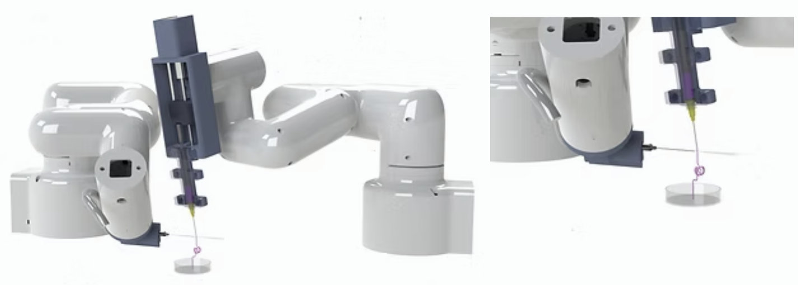
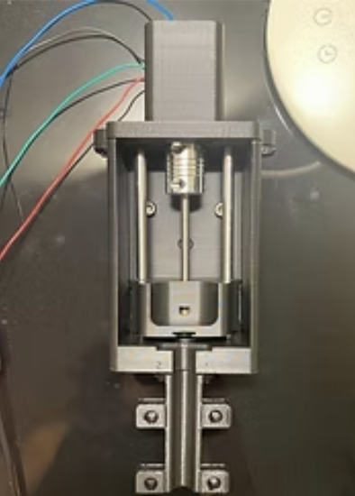

Cryogenic 3D Printing
Date: 2021
The ongoing cryogenic 3D printing project aims to synchronize two robotic arms so that one performance is to 3D print complex structures with different bioinks and the second one performance is to solidify it with liquid nitrogen. The laboratory acquired one myCobot, a robotic arm from Elephant Robotics, to test if it works. The selection was based on its DOF, weightless, size and low-cost. In order to create a simulation, a model of the design was developed in Solidworks. The design consisted of the real model of the two robotic arms with a variance in their grips.
Gripper design
The first robotic arm gripper, in charge of 3D printing, was replaced with an extruder made from scratch. The components used were a NEMA 11 motor, metal tubes, bearing nuts, and screws. The main structure and holder platform were designed in Solidworks and 3D printed with PLA. The second robotic arm gripper was a big hose with a nitrogen bomb attached to the robotic arm’s wrist with a holder designed in Solidworks.

Simulation